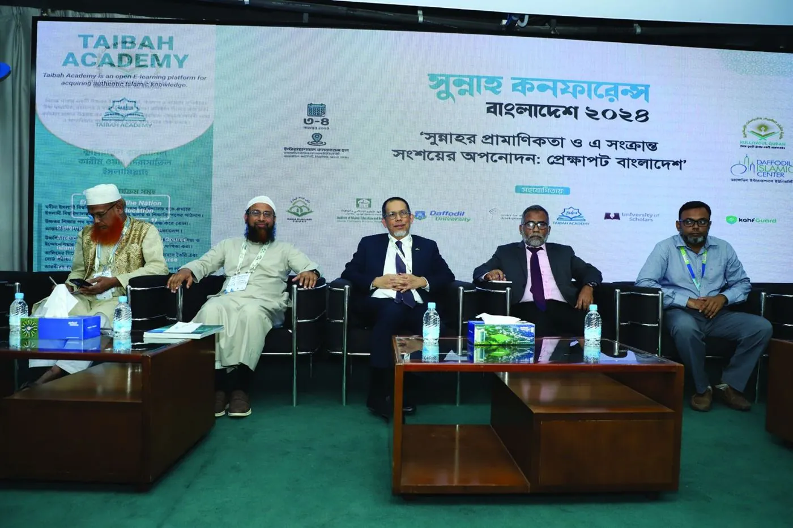
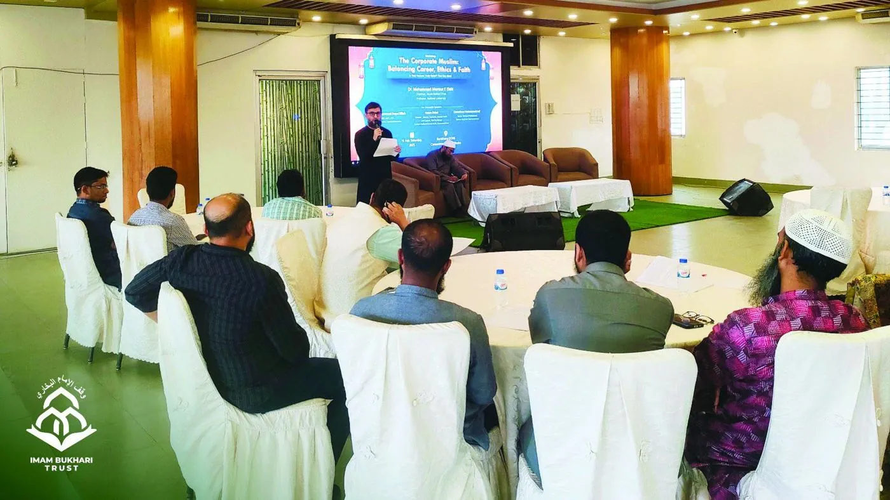
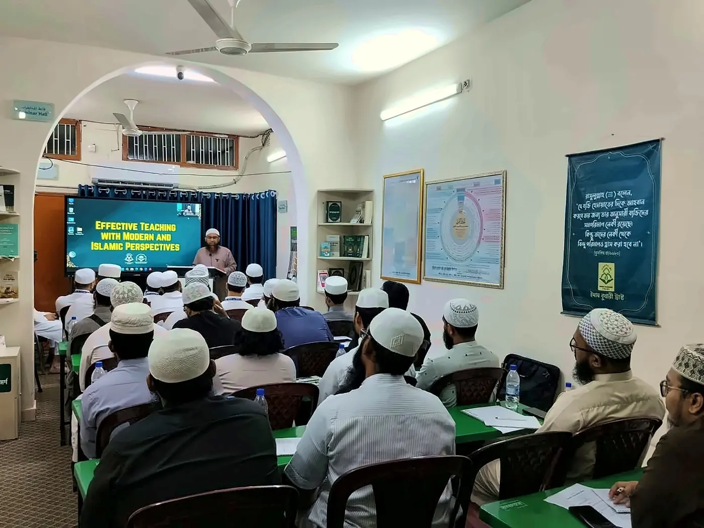
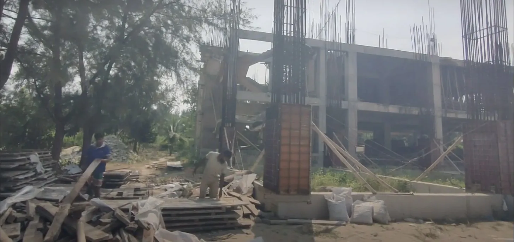
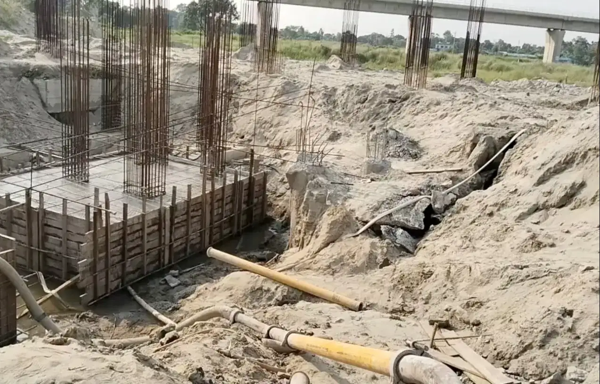
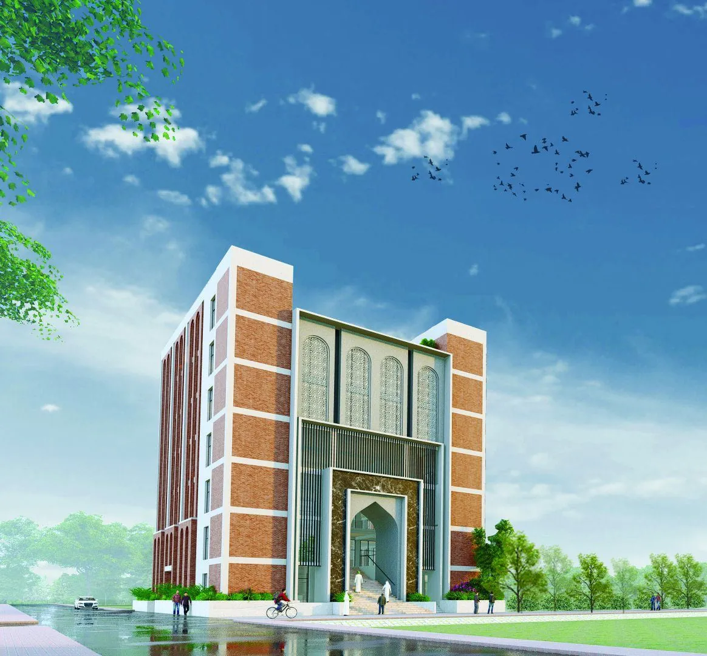
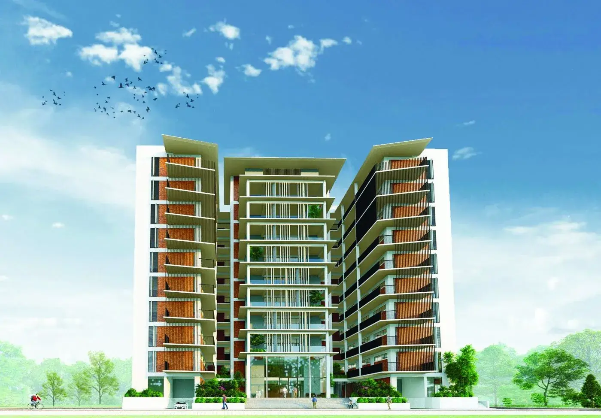
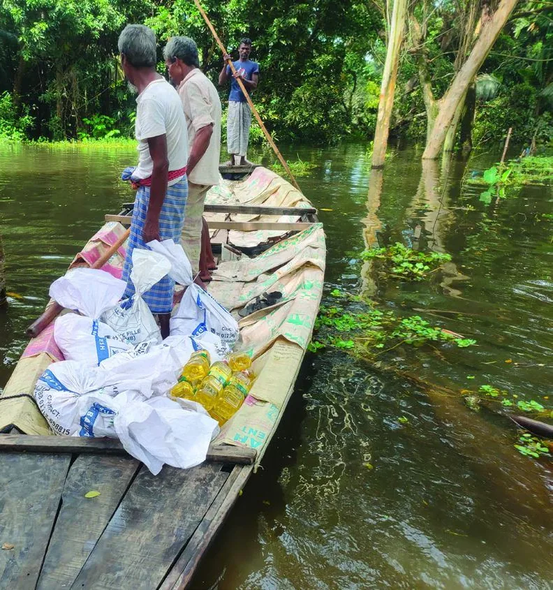
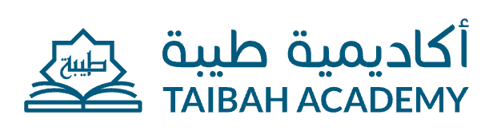

ইমাম বুখারী ট্রাস্ট · উত্তরা, ঢাকা · ২০১৭ থেকে
ঈমান। ইলম। খিদমাহ।
কুরআন ও বিশুদ্ধ সুন্নাহর আলোকে একটি জ্ঞানভিত্তিক সমাজ গড়ার লক্ষ্যে শিক্ষা, গবেষণা, দাওয়াহ, মাসজিদকেন্দ্রিক কমিউনিটি ও সমাজকল্যাণে কাজ করছে ইমাম বুখারী ট্রাস্ট।
কুরআন ও বিশুদ্ধ সুন্নাহর আলোকে একটি জ্ঞানভিত্তিক সমাজ গড়ার লক্ষ্যে শিক্ষা, গবেষণা, দাওয়াহ, মাসজিদকেন্দ্রিক কমিউনিটি ও সমাজকল্যাণে কাজ করছে ইমাম বুখারী ট্রাস্ট।
বার দেখা হয়েছে ফেসবুকে আমাদের ইসলামিক কনটেন্ট
ইমাম বুখারী ট্রাস্ট একটি অলাভজনক, বহুমুখী ইসলামী প্রতিষ্ঠান। কুরআন ও বিশুদ্ধ সুন্নাহর আলোকে শিক্ষা, গবেষণা, দাওয়াহ ও সমাজকল্যাণের মাধ্যমে আমরা ইসলামের প্রকৃত শিক্ষা মানুষের কাছে পৌঁছে দিতে, দৈনন্দিন জীবনে এর ব্যবহারিক প্রয়োগ দৃশ্যমান করতে এবং প্রতিটি প্রজন্মের কাছে ইসলামকে প্রাসঙ্গিক রাখতে কাজ করি। ১ অক্টোবর ২০১৭ ধলেশ্বরী নদীর তীরে ট্রাস্টের আনুষ্ঠানিক কার্যক্রম শুরু হয়।
ইমাম বুখারী ট্রাস্ট সম্পর্কে আরও﴿وَلْتَكُن مِّنكُمْ أُمَّةٌ يَدْعُونَ إِلَى ٱلْخَيْرِ وَيَأْمُرُونَ بِٱلْمَعْرُوفِ وَيَنْهَوْنَ عَنِ ٱلْمُنكَرِ ۚ وَأُو۟لَـٰٓئِكَ هُمُ ٱلْمُفْلِحُونَ﴾
“আর তোমাদের মধ্যে এমন একটি দল যেন থাকে যারা কল্যাণের দিকে আহবান করবে এবং সৎকাজের নির্দেশ দেবে ও অসৎকাজে নিষেধ করবে; আর তারাই সফলকাম।”
সূরা আলে ইমরান ৩:১০৪
সমকালীন বিষয়ে কুরআন-সুন্নাহভিত্তিক গবেষণা, সেমিনার ও নীতিনির্ধারণী সংলাপ।
শিশু থেকে উচ্চশিক্ষা পর্যন্ত বিশুদ্ধ আকীদাভিত্তিক ও আরবি ভাষাকেন্দ্রিক শিক্ষা।
সাপ্তাহিক হালাকা, প্রশ্নোত্তর, কোর্স ও ডিজিটাল দাওয়াহর মাধ্যমে ইলম পৌঁছে দেওয়া।
মাসজিদ আন-নববীর আদলে মাসজিদকেন্দ্রিক দ্বীনি কমিউনিটি গড়ে তোলা।
ত্রাণ, পুনর্বাসন, কুরবানি, ইফতার ও শীতবস্ত্রের মাধ্যমে ইসলামের সৌন্দর্য দৃশ্যমান করা।

কোর্সসমূহআরবি ভাষা, ডিপ্লোমা-সার্টিফিকেট এবং ব্যবহারিক ইসলামী প্রশিক্ষণ কোর্স।
টিচার্স ট্রেনিং ইনস্টিটিউটইমাম ও শিক্ষকদের জ্ঞান, নেতৃত্ব, পাঠদান পদ্ধতি ও কমিউনিটি এনগেজমেন্টে দক্ষ করে গড়ে তোলা।
নভেম্বর ২০২৬
নভেম্বর ২০২৬মাসজিদকে কেন্দ্র করে একটি পূর্ণাঙ্গ জ্ঞানভিত্তিক ক্যাম্পাস: পাঁচটি ভবনে শিক্ষা, গবেষণা, দাওয়াহ ও সমাজসেবার সমন্বয়।
দক্ষিণ এশিয়ায় ৬০ কোটির বেশি মুসলিমের বাস, কিন্তু মানসম্পন্ন, গবেষণাভিত্তিক ইসলামী প্রতিষ্ঠান খুবই কম। এই প্রকল্প সেই শূন্যস্থান পূরণের একটি সমন্বিত মডেল।
প্রকল্পটি দেখুন«مَنْ بَنَى مَسْجِدًا لِلَّهِ بَنَى اللَّهُ لَهُ فِي الْجَنَّةِ مِثْلَهُ»
রাসূলুল্লাহ ﷺ বলেছেন: “যে ব্যক্তি আল্লাহর জন্য একটি মাসজিদ নির্মাণ করে, আল্লাহ জান্নাতে তার জন্য অনুরূপ একটি ঘর নির্মাণ করেন।”
সহীহ মুসলিম ৫৩৩«إِذَا مَاتَ الإِنْسَانُ انْقَطَعَ عَنْهُ عَمَلُهُ إِلاَّ مِنْ ثَلاَثَةٍ إِلاَّ مِنْ صَدَقَةٍ جَارِيَةٍ أَوْ عِلْمٍ يُنْتَفَعُ بِهِ أَوْ وَلَدٍ صَالِحٍ يَدْعُو لَهُ»
রাসূলুল্লাহ ﷺ বলেছেন: “মানুষ মারা গেলে তার সব আমল বন্ধ হয়ে যায়, তিনটি ছাড়া: সাদাকায়ে জারিয়া, এমন জ্ঞান যা দ্বারা উপকার পাওয়া যায়, অথবা নেক সন্তান যে তার জন্য দু‘আ করে।”
সহীহ মুসলিম ১৬৩১
১ম ও ২য় তলার ছাদ ঢালাই সম্পন্নআল্লাহর ঘর নির্মাণে শরিক হোন

ফাউন্ডেশন প্রায় শেষপ্রজন্মের জন্য ইলমের ঘর
কুরআন-সুন্নাহর সঠিক বার্তা সবার কাছে
শীতার্ত মানুষের পাশে একটি কম্বল

দুর্যোগে ত্রাণ, দুর্যোগের পর পুনর্বাসন
মেধাবী ও অসচ্ছল শিক্ষার্থীর পাশে


IslamQA ও Islamweb-এর হাজারো প্রমাণভিত্তিক প্রশ্নোত্তর এক জায়গায়, বাংলা ও ইংরেজিতে। না পেলে আমাদের আলেমদের প্রশ্ন করুন।
চেয়ারম্যান, ইমাম বুখারী ট্রাস্ট · প্রফেসর, জাতীয় বিশ্ববিদ্যালয়, বাংলাদেশ · প্রতিষ্ঠাতা, কুল্লিয়াতুল কুরআন
২০১৭ সালে ইমাম বুখারী ট্রাস্ট শিক্ষা, সমাজ উন্নয়ন ও দ্বীনি কার্যক্রমকে সামনে রেখে প্রতিষ্ঠিত হয়। এর সর্বপ্রথম প্রকল্প হলো ইমাম বুখারী জামে মাসজিদ কমপ্লেক্স বাংলাদেশ এবং দ্বিতীয় প্রকল্প হলো কুল্লিয়াতুল কুরআনিল কারীমসহ একগুচ্ছ একাডেমিক কার্যক্রম। জ্ঞানার্জন ও জ্ঞানের সাধনা এবং জ্ঞান বিতরণই একটি জাতির সমৃদ্ধির প্রধান কারণ; তাই শিক্ষার্জন ও শিক্ষাদান মুসলিম জাতির সবচেয়ে বড় অগ…
পূর্ণ বার্তা পড়ুননিয়মিত দাতা, স্বেচ্ছাসেবক বা শুভানুধ্যায়ী হিসেবে আমাদের সাথে থাকুন। ছোট একটি ফরম পূরণ করুন; প্রোগ্রাম, অগ্রগতি ও দাওয়াহর খবর আপনার কাছে পৌঁছে যাবে।

ইসলামী গ্রন্থ ও শিক্ষা উপকরণ প্রকাশনা।
প্রতিটি দান নির্ধারিত খাতে লিপিবদ্ধ হয় এবং দাতাকে রসিদ দেওয়া হয়। অগ্রগতি ও প্রকাশিত প্রতিবেদন দেখুন এক জায়গায়।
দান করার সময় খাত (তহবিল) বেছে নিন। দান জানানোর ফরমে খাত ও ট্রানজেকশন আইডি দিলে হিসাব বিভাগ সেই খাতে লিপিবদ্ধ করে।
এখনই দান করুন